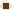

Kurt in his own words
from interviews and his journals — the source is noted under each quote
"Punk is musical freedom. It's saying, doing and playing what you want. In Webster's
terms, 'nirvana' means freedom from pain, suffering and the external world, and that's
pretty close to my definition of punk rock."
— Los Angeles Times, 1994
"Drugs are a waste of time. They destroy your memory and your self-respect and
everything that goes along with your self-esteem. They're no good at all."
— Rolling Stone, 1992
"I tried hard to have a father / But instead I had a dad."
— Rolling Stone interview, 1994
"I'd rather be hated for who I am than loved for who I am not."
— attributed to Kurt
"Wanting to be someone else is a waste of the person you are."
— attributed to Kurt
"I'm not well read, but when I do read, I read well."
— Journals, 2002
"To be positive at all times is to ignore all that is important, sacred or valuable.
To be negative at all times is to be threatened by ridiculousness and instant
discredibility."
— Journals, 2002
"I wanted to have the adoration of John Lennon and the anonymity of Ringo Starr."
— interview
"We are nothing other than a shadow of what was already there. Every time I write a
riff, I can't help but realize it is an imitation of some other piece, that it's not
original."
— Rockerilla, September 1989
"I'm just a spokesman for myself. It just so happens that there's a bunch of people
that are concerned with what I have to say."
— interview
"I definitely feel closer to the feminine side of the human being than I do the male —
or the American idea of what a male is supposed to be."
— interview

Last updated: 04/04/94
[ home ] · Nirvana Memorial Web Ring


© 1994 · in memory of Kurt Cobain